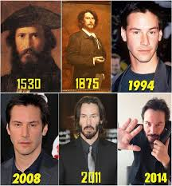

What Hollywood would like you to believe is that Mr. Reeves was born on September 2nd, in the year of our Lord 1964. There is much mystery surrounding the story of this... dare I say "Man." There are rumors that his story actually began in 748 A.D. as Charlamage, where he began to hone his craft as a living "Vampire". He passed from this story line in the year 814 A.D.
It is believed he lived life in the shadows yet again, until he began to miss the limelight once more. He reared his evil yet angelic face once more as Paul Mounet betwixt the years 1847 and 1922, where he once again captured the hearts of humanity, this time as a practioner of medicine. Oddly, Mr. Mounet's body was never found.
This leads us to our current timeline of "The Illustrious One". He was "born" in Beirut, Lebonon in 1962. He has travled numerous times within this story, to places like Sydney, Toronto, and New York. 
It should be noted that Val Kilmer is listed here because obviously his life force is being stolen by someone.